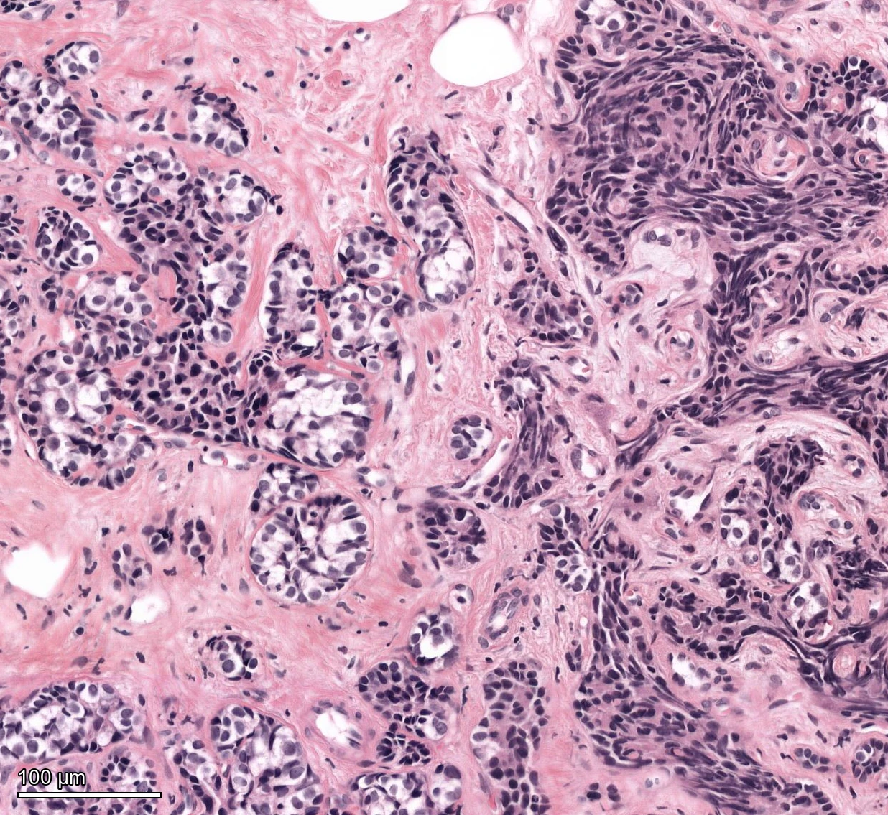
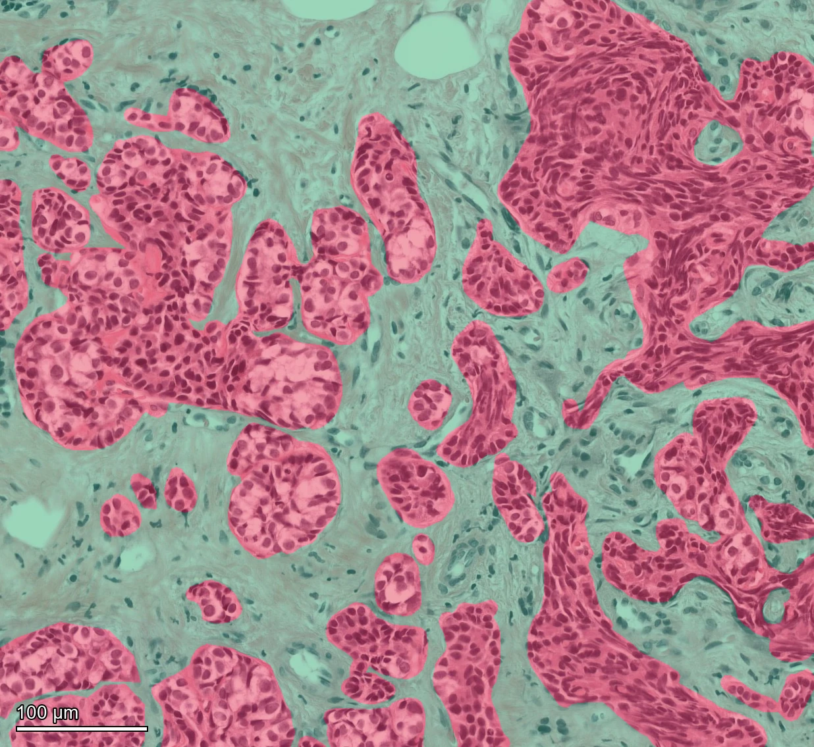
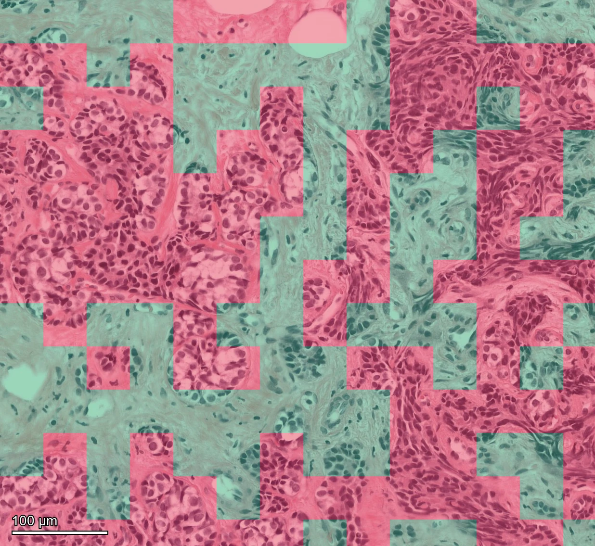
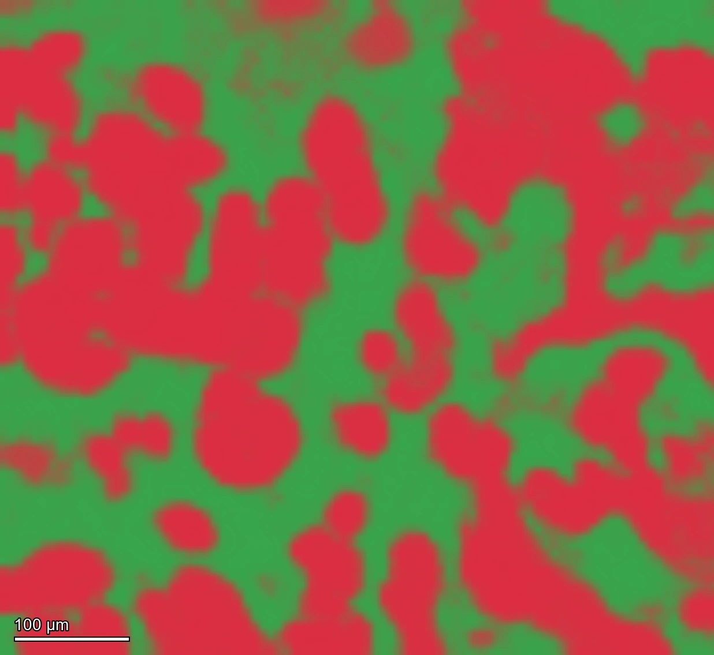
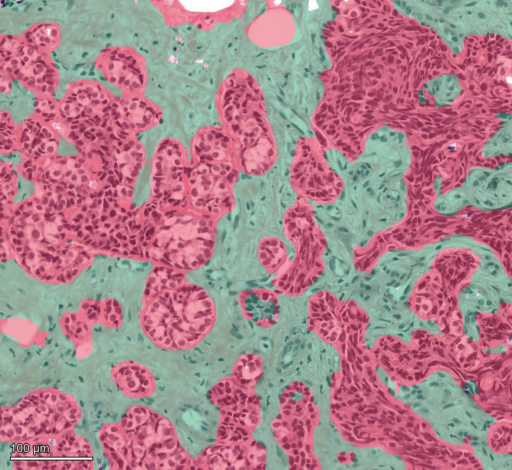
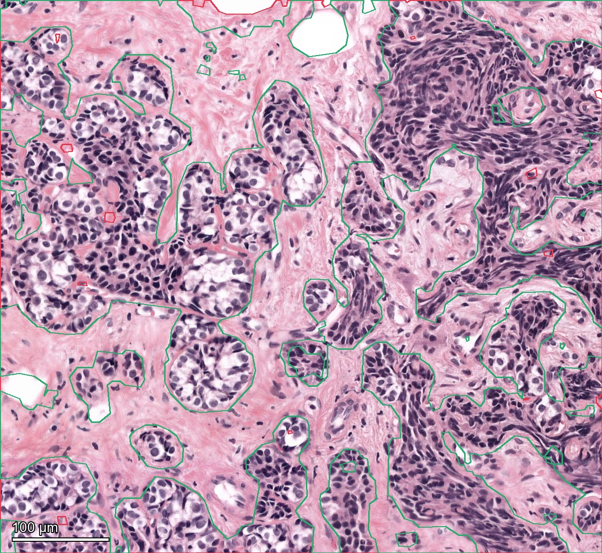

This is one selected, previously inspected, two-role ROI. The source and target identifiers differ, but patient independence is unverified. Bora inference did not read target annotation; frozen tile scores on this target had already been inspected before the Bora run. Group identity here is an area-majority readout of source-trained tile classes; it is distinct from Bora’s main Neighbor context group classifier. These scores do not establish independent accuracy or WSI-to-WSI transfer.
TumorStroma Masks are semitransparent overlays on the original H&E.












Output and interpretation
The native raster is an exact rasterization of the two-feature classified GeoJSON. The export contains 26 polygon parts and 28 enclosed holes; none is smaller than 20 native pixels. Tumor and stroma IoUs are 0.791 and 0.751 on annotated pixels. The RGB panel is computational evidence, not a measured microscopy channel.
Original image and expert labels: TIGER ROI-level annotations of the WSIROIS subset, van Rijthoven et al. TIGER annotations and non-TCGA training images are licensed CC BY-NC 4.0. This figure is a research adaptation with overlays, conversion, segmentation and simplified contours. Dataset rights are separate from the repository’s software license. No provider endorsement is implied.